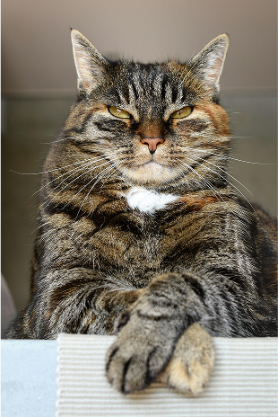
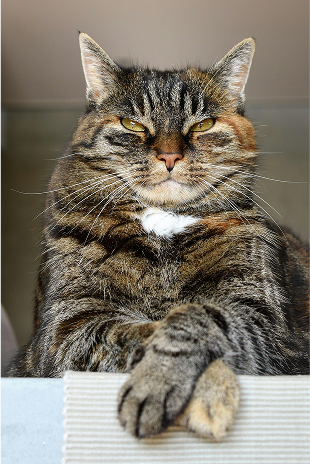
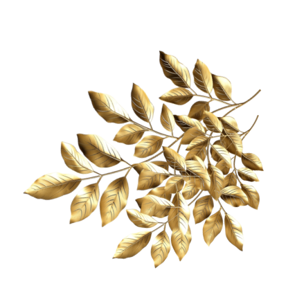
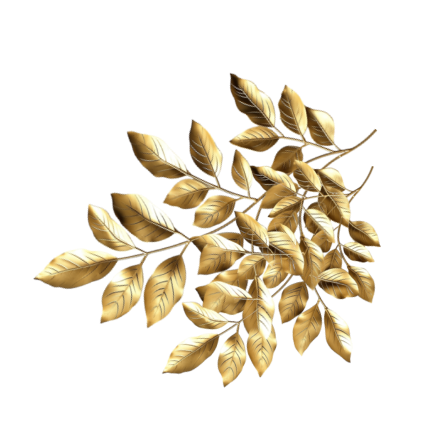
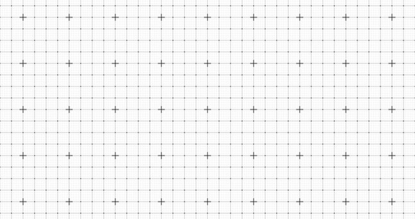
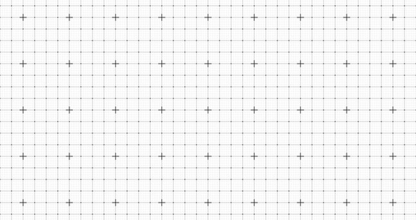

Emperor Malachior VII

Emperor dikenal dunia juga sebagai:
The Feeder of The World
The Open Source Father
The Cleaver King alive
Imperial Ages

The Wild World Era
The Wild World Era adalah masa awal berdirinya kerajaan, ketika dunia masih liar dan penuh misteri. Pada era ini, para pendiri kerajaan berjuang menaklukkan alam dan membangun fondasi peradaban. Segala sesuatu dimulai dari ketidakpastian, namun semangat persatuan dan keberanian membawa kerajaan menuju masa depan yang lebih cerah.

The First Mother Era
Pada masa ini, para ibu agung memimpin peradaban. Mereka dikenal sebagai pelindung, pengasuh, dan sumber kebijaksanaan bagi seluruh kerajaan. Di bawah kepemimpinan mereka, masyarakat berkembang dengan nilai kasih sayang, gotong royong, dan penghormatan terhadap tradisi. Era ini juga ditandai dengan kemajuan dalam seni, pendidikan, dan tata kelola, menjadikan kerajaan semakin makmur dan harmonis.

The Black Boss Era
Kekuasaan gelap merajai. Pada era ini, kerajaan dipimpin oleh sosok misterius yang dikenal sebagai The Black Boss, membawa perubahan besar dan penuh tantangan. Intrik, strategi, dan kekuatan menjadi kunci bertahan hidup. Masyarakat hidup dalam bayang-bayang ketakutan, namun dari kegelapan inilah muncul harapan baru dan tekad untuk membangun masa depan yang lebih baik.
The
Pandemic Era
Bencana besar menyebar ke seluruh negeri. Pada masa The Pandemic Era, kerajaan menghadapi tantangan yang belum pernah terjadi sebelumnya. Wabah misterius memaksa semua rakyat untuk beradaptasi, saling menjaga jarak, dan menemukan cara baru untuk bertahan hidup. Di tengah keterbatasan, muncul solidaritas dan inovasi, memperkuat ikatan antar warga serta menumbuhkan harapan akan masa depan yang lebih baik.

The Open Source Era
Semua orang memiliki kekuatan yang setara. Pada The Open Source Era, pengetahuan dan inovasi dibagikan secara bebas tanpa batasan. Setiap individu berkontribusi untuk kemajuan bersama, membangun komunitas yang saling mendukung dan terbuka terhadap perubahan. Kolaborasi menjadi kunci utama, mendorong terciptanya solusi kreatif dan teknologi baru yang bermanfaat bagi seluruh kerajaan. Era ini menandai kebangkitan semangat gotong royong dan transparansi, di mana setiap suara dihargai dan setiap ide dapat mengubah masa depan.
The Open Source Era

Imperial Nobles
- The Wild World Era
- The First Mother Era
- The Black Boss Era
- The Pandemic Era
- The Open Source Era
Era ini adalah awal mula kekuasaan besar. The Wild World Era adalah masa awal berdirinya kerajaan, ketika dunia masih liar dan penuh misteri. Pada era ini, para pendiri kerajaan berjuang menaklukkan alam dan membangun fondasi peradaban. Segala sesuatu dimulai dari ketidakpastian, namun semangat persatuan dan keberanian membawa kerajaan menuju masa depan yang lebih cerah.


Philosophy
Test for your Luck

Kartu tarot Death tidak selalu berarti kematian secara fisik. Dalam makna baik, kartu ini melambangkan akhir dari suatu fase dan awal yang baru. Death menandakan transformasi positif, perubahan besar yang membawa pertumbuhan, serta kesempatan untuk melepaskan hal-hal lama yang sudah tidak bermanfaat. Ini adalah momen untuk berani menghadapi perubahan dan menyambut awal yang lebih baik dalam hidup.
Your result must appear Here
Klik tombol di bawah untuk mendapatkan hasil
 

Archives
Arsip Kerajaan menyimpan berbagai pusaka dan dokumen penting yang menjadi saksi perjalanan Imperium dari masa purba hingga era modern. Mulai dari naskah kuno, catatan peperangan, hingga artefak bersejarah, setiap koleksi mencerminkan kebijaksanaan, perjuangan, dan inovasi para leluhur. Di sini, tersimpan rahasia masa lalu, warisan budaya, serta tonggak perubahan yang membentuk kejayaan kerajaan hingga hari ini.

 
